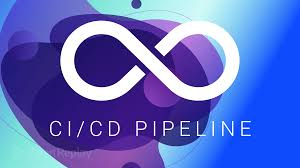
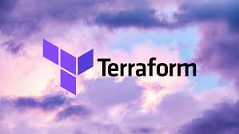
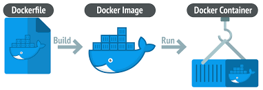
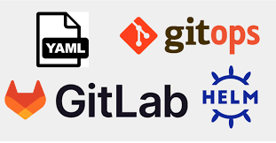

Hi, I’m Christian Oranu, an Operations & Technology Specialist with a proven ability to optimize processes and scale solutions.
My foundation is built on 3+ years of experience in fast-paced remote operations, spanning executive support, project coordination, and high-level customer service. I bring the clarity, structured thinking, and resourcefulness honed in those roles, managing CRM systems, executing email campaigns, and solving complex support issues and apply it to technical infrastructure.
I specialize in Cloud Automation and System Optimization, leveraging core DevOps tools to build and secure reliable environments. My technical skillset includes Infrastructure as Code (IaC) with Terraform, Containerization with Docker, and Advanced Git Workflows, all used to ensure efficient, scalable, and reproducible technical solutions.
Clients and colleagues often say, "He makes complex situations look easy." That’s because I approach every task, whether it’s organizing internal workflows or deploying cloud infrastructure, with a **systemic mindset**. I don’t just check boxes; I **bridge gaps** between technical needs and operational goals to drive meaningful results.

A detailed project showing my hands-on experience with fully automating deployment processes using AWS (VPC, EC2) and CI/CD services (GitHub Actions, CodePipeline).
View Documentation
Provisioning a multi-server Linux environment on a cloud platform (VPC, EC2) entirely through code, demonstrating resource management and state handling.
View Documentation
A hands-on demonstration of packaging a web application using Docker, showcasing multi-stage builds, efficient image layering, and deployment via Docker Hub.
View Documentation
Demonstrated proficiency in professional Git branching/merging workflows and structured configuration using YAML, essential skills for CI/CD pipelines.
View DocumentationI am actively seeking opportunities. Let's connect or discuss a project.